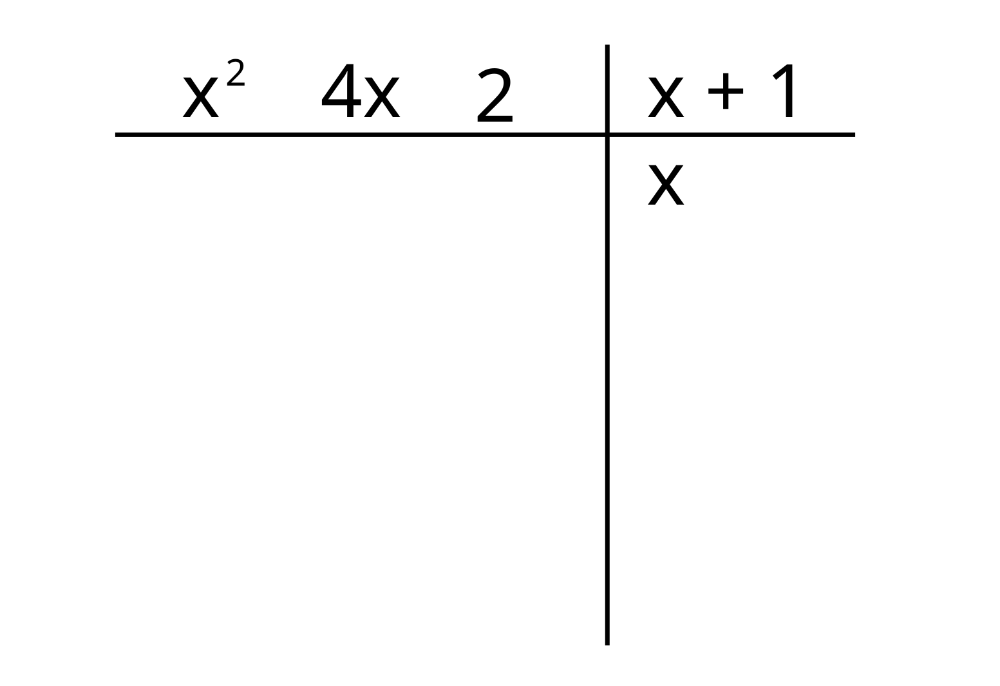

Divisione tra polinomi
Di seguito spiegeremo come effettuarla.
Divisione tra polinomi
La divisione tra polinomi è utile in molte situazioni e spesso ci aiuta a semplificare i calcoli, tenerla a mente è importante anche perché si tratta di un’operazione di base e potrebbe capitare in alcuni esercizi.
Un teorema dell’algebra afferma che è sempre possibile dividere un polinomio per qualsiasi altro polinomio e avere come risultati nuovi polinomi, il polinomio quoziente e il polinomio resto.
\[P(x) = Q(x)D(x)+R(x)\]
Come svolgere la divisione
Per svolgere la divisione basta seguire pochi semplici passaggi e ripeterli. Bisogna prima ricordare per che in caso di polinomio diviso per un polinomio di grado superiore non è necessario svolgere nessun passaggio, il quoziente sarà il polinomio nullo e il resto sarà il polinomio di partenza:
Esempio:
• \(x^2-1: x^3+x-6 = 0 \), \(R=x^2-1\)
Chiarito questo passiamo all’algoritmo di svolgimento della divisione.
Per prima cosa scriviamo in una tabella di questo tipo prima il polinomio e poi il divisore, ordinando i termini in modo decrescente secondo il grado (se il polinomio non è completo si scrive uno \(0\) al posto dei termini mancanti):
Esempio:
\(x^2+4x+2:x+1\)
Fatto questo, procediamo con la divisione del primo termine del polinomio di partenza con il primo termine del divisore e scriviamo il risultato sotto al divisore (semplice divisione tra monomi trattata nella lezione sui monomi):

Poi moltiplichiamo quest’ultimo per ogni termine del divisore e scriviamo i risultati cambiati di segno sotto i termini di grado corrispondente del polinomio di partenza:

Ora facciamo la somma tra i termini del polinomio e i termini appena scritti al disotto di essi e scriviamo sotto, separato da una linea orizzontale il risultato:
Ripetiamo il processo finché il polinomio a sinistra è di grado inferiore al divisore, quando è di grado superiore ci fermiamo. Il polinomio a sinistra sarà il nostro resto, mentre quello a destra il quoziente.
Speriamo di avervi reso chiaro il concetto, ricordate che se il divisore è di primo grado potete anche usare la regola di Ruffini per la divisione.